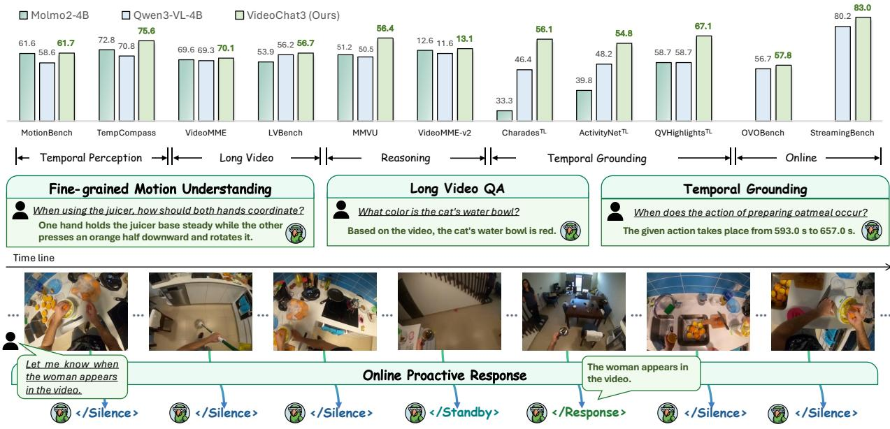

VideoChat3: Fully Open Video MLLM for Efficient and Generalist Video Understanding arXiv new; open video MLLM / I3D-ViT 原文链接
编号2607.14935优先级P2类别arXiv new; open video MLLM / I3D-ViT会议arXiv new; open video MLLM / I3D-ViT方法开放训练策略与数据流水线，提出 I3D-ViT 和自适应帧分辨率，适合看视频表征工程化路线来源arXiv / OpenReview
Figureure 2 · VideoChat3 architecture with I3D-ViTFigure 2 VideoChat3 architecture with I3D-ViT. VideoChat3 follows the classical ViT–MLP Projector–LLM architecture, with I3D-ViT enabling eficient video encoding before visual tokens are passed to the LLM. Specifically, spatial 2 2 merging and temporal T -frame pooling reduce the visual sequence length by approximately a factor of 4T . Under the default setting of T = 4, this yields a 16 spatiotemporal compression ratio; for clarity, the figure illustrates the mechanism with $T = 2$这张图概括 VideoChat3 的整体方法流程。阅读时先看模块之间传递的训练信号，再看作者如何把目标拆成可优化的子问题。

Figureure 1 · VideoChat3 achieves strong performance across diverse evaluation benchFigure 1 VideoChat3 achieves strong performance across diverse evaluation benchmarks, including temporal perception, long video understanding, and temporal grounding, while also supporting online proactive responses.这张图/表用于判断 VideoChat3 的实验收益来自哪里。重点看替换、消融或跨模型设置下趋势是否一致，而不是只看单个最高分。